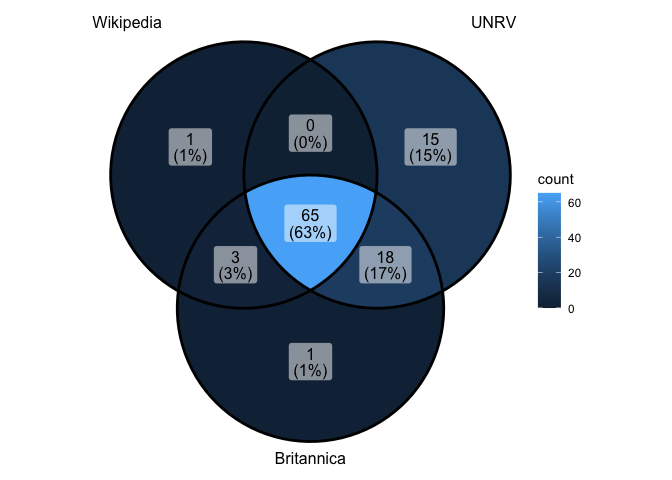
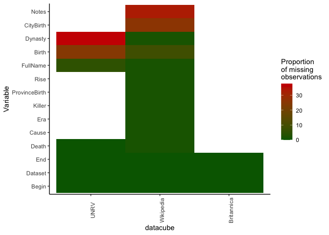
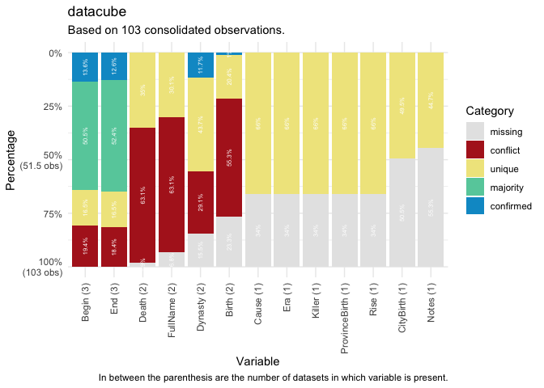

manydata is a portal to ‘many’ packages containing many datacubes, each containing many related datasets on many issue-domains, actors and institutions of global governance. {manytreaties} contains data on international environmental, trade, and health agreements, and {manystates}: contains data on states throughout history.
Datasets are related to one another within a datacube through a particular coding system which follows the same principles across the different packages.
For instance, in {manytreaties}, the agreements and parties datacubes have standardised IDs (manyID), and date variables such as Begin and End that denote the beginning and end dates of treaties respectively. The beginning date is derived from the signature or entry into force date, whichever is the earliest available date for the treaty. Standardised IDs across datasets allow the same observations to be matched across datasets so that the values can be compared or expanded where relevant. These specific variable names allows the comparison of information across datasets that have different sources. It enables users to point out the recurrence, difference or absence of observations between the datasets and extract more robust data when researching on a particular governance domain.
The parties datacube contains additional date variables on each state member’s ratification, signature, entry into force, and end dates for each treaty. Data in the memberships datacube is comparable across datasets through standardised state names and stateIDs, made possible with the manypkgs::code_states() function. More information on each state, including its Begin and End date, can be found in the {manystates} package.
To enable users to work with the data in these packages, manydata contains tools for:
- calling data packages,
- comparing individual datasets, and
- consolidating datacubes in different ways.
We intend for manydata to be useful:
- at the start of a research project, to access and gather recent versions of well-regarded datasets, see what is available, describe, and explore the data,
- in the middle of a project, to facilitate analysis, comparison and modelling, and
- at the end of the project, to help with conducting robustness checks, preparing replication scripts, and writing the next grant application.
Call ‘many’ packages
The easiest way to install manydata is directly from CRAN.
install.packages("manydata")The development version of the package manydata can also be downloaded from GitHub.
# install.packages("remotes")
remotes::install_github("globalgov/manydata")Once manydata is installed, the call_ functions can be used to discover the ‘many packages’ currently available and/or download or update these packages when needed. For this, the call_packages() can be used.
library(manydata)
call_packages() # lists all packages currently available
call_packages("manytrade") # downloads and installs this packageThe call_sources() function obtains information about the sources and original locations of the desired datasets.
call_sources("emperors")#> # A tibble: 3 × 3
#> Dataset Source URL
#> <chr> <chr> <chr>
#> 1 Wikipedia Wikipedia, 'List_of_Roman_emperors', https://en.wikipedia.o… http…
#> 2 UNRV United Nations of Roma Victrix, 'Roman Emperor list', https:… http…
#> 3 Britannica Britannica, 'List of Roman emperors', https://www.britannica… http…Comparing ‘many’ data
The first thing users of the data packages may want to do is to identify datasets that might contribute to their research goals. One major advantage of storing datasets in datacubes is that it facilitates the comparison and analysis of multiple datasets in a specific domain of global governance. To aid in the selection of datasets and the use of data within datacubes, the compare_ functions in manydata allows users to quickly compare different information on datacubes and/or datasets across ‘many packages’. These include comparison for data observations, variables, and ranges, overlap among observations, missing observations, and conflicts among observations.
For now, let’s work with the Roman Emperors datacube included in manydata. We can get a quick summary of the datasets included in this package with the following command:
We can see that there are three named datasets relating to emperors here: wikipedia (dataset assembled from Wikipedia pages), UNVR (United Nations of Roman Vitrix), and britannica (Britannica Encyclopedia List of Roman Emperors). Each of these datasets has their advantages and so we may wish to understand their similarities and differences, summarise variables across them, and perhaps also rerun models across them.
The compare_dimensions() function returns a tibble with the observations and variables of each dataset within the specified datacube of a many package.
compare_dimensions(emperors)#> # A tibble: 3 × 5
#> Dataset Observations Variables Earliest_Date Latest_Date
#> <chr> <chr> <chr> <chr> <chr>
#> 1 Wikipedia 69 ID, Begin, End, FullName, B… -0062-09-23 0421-09-02
#> 2 UNRV 98 ID, Begin, End, Birth, Deat… -0063-01-01 0518-12-31
#> 3 Britannica 87 ID, Begin, End -0031-01-01 0491-12-31The compare_overlap() function returns a tibble with the number of overlapping observations for a specified variable (specify using the key argument) across datasets within the datacube.
plot(compare_overlap(emperors, key = "ID"))
The compare_missing() function returns a tibble with the number and percentage of missing observations in datasets within datacube.
plot(compare_missing(emperors))
Finally, the compare_categories() function help researchers identify how variables across datasets within a datacube relate to one another in five categories. Observations are matched by an “ID” variable to facilitate comparison. The categories here include ‘confirmed’, ‘majority’, ‘unique’, ‘missing’, and ‘conflict’. Observations are ‘confirmed’ if all non-NA values are the same across all datasets, and ‘majority’ if the non-NA values are the same across most datasets. ‘Unique’ observations are present in only one dataset and ‘missing’ observations indicate there are no non-NA values across all datasets for that variable. Observations are in ‘conflict’ if datasets have different non-NA values.
plot(compare_categories(emperors, key = "ID"))
Consolidating ‘many’ data
To retrieve an individual dataset from this datacube, we can use the pluck() function.
pluck(emperors, "Wikipedia")However, the real value of the various ‘many packages’ is that multiple datasets relating to the same phenomenon are presented together. manydata contains flexible methods for consolidating the different datasets in a datacube into a single dataset. For example, you could have the rows (observations) from one dataset, but add on some columns (variables) from another dataset. Where there are conflicts in the values across the different datasets, there are several ways that these may be resolved.
The consolidate() function facilitates consolidating a set of datasets, or a datacube, from a ‘many’ package into a single dataset with some combination of the rows and columns. The function includes separate arguments for rows and columns, as well as for how to resolve conflicts in observations across datasets. The key argument indicates the column to collapse datasets by. This provides users with considerable flexibility in how they combine data.
For example, users may wish to see units and variables coded in “any” dataset (i.e. units or variables present in at least one of the datasets in the datacube) or units and variables coded in “every” dataset (i.e. units or variables present in all of the datasets in the datacube).
consolidate(datacube = emperors, join = "full",
resolve = "coalesce", key = "ID")#> # A tibble: 69 × 14
#> ID Begin End FullName Birth Death CityBirth ProvinceBirth Rise Cause
#> <chr> <mda> <mda> <chr> <mda> <mda> <chr> <chr> <chr> <chr>
#> 1 Augustus -002… 0014… Imperat… -006… 0014… Rome Italia Birt… Assa…
#> 2 Tiberius 0014… 0037… Tiberiv… -004… 0037… Rome Italia Birt… Assa…
#> 3 Caligula 0037… 0041… Gaivs I… 0012… 0041… Antitum Italia Birt… Assa…
#> 4 Claudius 0041… 0054… Tiberiv… -000… 0054… Lugdunum Gallia Lugdu… Birt… Assa…
#> 5 Nero 0054… 0068… Nero Cl… 0037… 0068… Antitum Italia Birt… Suic…
#> 6 Galba 0068… 0069… Servivs… -000… 0069… Terracina Italia Seiz… Assa…
#> 7 Otho 0069… 0069… Marcvs … 0032… 0069… Terentin… Italia Appo… Suic…
#> 8 Vitelli… 0069… 0069… Avlvs V… 0015… 0069… Rome Italia Seiz… Assa…
#> 9 Vespasi… 0069… 0079… Titvs F… 0009… 0079… Falacrine Italia Seiz… Natu…
#> 10 Titus 0079… 0081… Titvs F… 0039… 0081… Rome Italia Birt… Natu…
#> # ℹ 59 more rows
#> # ℹ 4 more variables: Killer <chr>, Dynasty <chr>, Era <chr>, Notes <chr>
consolidate(datacube = emperors, join = "inner",
resolve = "coalesce", key = "ID")#> # A tibble: 65 × 14
#> ID Begin End FullName Birth Death CityBirth ProvinceBirth Rise Cause
#> <chr> <mda> <mda> <chr> <mda> <mda> <chr> <chr> <chr> <chr>
#> 1 Augustus -002… 0014… Imperat… -006… 0014… Rome Italia Birt… Assa…
#> 2 Tiberius 0014… 0037… Tiberiv… -004… 0037… Rome Italia Birt… Assa…
#> 3 Caligula 0037… 0041… Gaivs I… 0012… 0041… Antitum Italia Birt… Assa…
#> 4 Claudius 0041… 0054… Tiberiv… -000… 0054… Lugdunum Gallia Lugdu… Birt… Assa…
#> 5 Nero 0054… 0068… Nero Cl… 0037… 0068… Antitum Italia Birt… Suic…
#> 6 Galba 0068… 0069… Servivs… -000… 0069… Terracina Italia Seiz… Assa…
#> 7 Otho 0069… 0069… Marcvs … 0032… 0069… Terentin… Italia Appo… Suic…
#> 8 Vitelli… 0069… 0069… Avlvs V… 0015… 0069… Rome Italia Seiz… Assa…
#> 9 Vespasi… 0069… 0079… Titvs F… 0009… 0079… Falacrine Italia Seiz… Natu…
#> 10 Titus 0079… 0081… Titvs F… 0039… 0081… Rome Italia Birt… Natu…
#> # ℹ 55 more rows
#> # ℹ 4 more variables: Killer <chr>, Dynasty <chr>, Era <chr>, Notes <chr>Users can also choose how they want to resolve conflicts between observations in consolidate() with several ‘resolve’ methods:
- coalesce: the first non-NA value
- max: the largest value
- min: the smallest value
- mean: the average value
- median: the median value
- random: a random value
consolidate(datacube = emperors, join = "full", resolve = "max", key = "ID")#> # A tibble: 69 × 14
#> ID Begin End FullName Birth Death CityBirth ProvinceBirth Rise Cause
#> <chr> <mda> <mda> <chr> <mda> <mda> <chr> <chr> <chr> <chr>
#> 1 Augustus -002… 0014… Imperat… -006… 0014… Rome Italia Birt… Assa…
#> 2 Tiberius 0014… 0037… Tiberiv… -004… 0037… Rome Italia Birt… Assa…
#> 3 Caligula 0037… 0041… Gaivs I… 0012… 0041… Antitum Italia Birt… Assa…
#> 4 Claudius 0041… 0054… Tiberiv… -000… 0054… Lugdunum Gallia Lugdu… Birt… Assa…
#> 5 Nero 0054… 0068… Nero Cl… 0037… 0068… Antitum Italia Birt… Suic…
#> 6 Galba 0068… 0069… Servivs… -000… 0069… Terracina Italia Seiz… Assa…
#> 7 Otho 0069… 0069… Marcvs … 0032… 0069… Terentin… Italia Appo… Suic…
#> 8 Vitelli… 0069… 0069… Avlvs V… 0015… 0069… Rome Italia Seiz… Assa…
#> 9 Vespasi… 0069… 0079… Titvs F… 0009… 0079… Falacrine Italia Seiz… Natu…
#> 10 Titus 0079… 0081… Titvs F… 0039… 0081… Rome Italia Birt… Natu…
#> # ℹ 59 more rows
#> # ℹ 4 more variables: Killer <chr>, Dynasty <chr>, Era <chr>, Notes <chr>
consolidate(datacube = emperors, join = "inner", resolve = "min", key = "ID")#> # A tibble: 65 × 14
#> ID Begin End FullName Birth Death CityBirth ProvinceBirth Rise Cause
#> <chr> <mda> <mda> <chr> <mda> <mda> <chr> <chr> <chr> <chr>
#> 1 Augustus -002… -0014 Gaius J… -006… 0014 Rome Italia Birt… Assa…
#> 2 Tiberius 0014… 0037 Tiberiu… -004… 0037 Rome Italia Birt… Assa…
#> 3 Caligula 0037… 0041 Gaius C… 0012… 0014 Antitum Italia Birt… Assa…
#> 4 Claudius 0041… 0054 Tiberiu… -000… 0041 Lugdunum Gallia Lugdu… Birt… Assa…
#> 5 Nero 0054… 0068 Claudiu… 0037… 0068 Antitum Italia Birt… Suic…
#> 6 Galba 0068… 0069 Servius… -000… 0069 Terracina Italia Seiz… Assa…
#> 7 Otho 0069… 0069 Marcus … 0032… 0069 Terentin… Italia Appo… Suic…
#> 8 Vitelli… 0069… 0069 Aulus V… 0015… 0069 Rome Italia Seiz… Assa…
#> 9 Vespasi… 0069… 0079 Titus F… 0009… 0079 Falacrine Italia Seiz… Natu…
#> 10 Titus 0079… 0081 Titus F… 0039… 0079 Rome Italia Birt… Natu…
#> # ℹ 55 more rows
#> # ℹ 4 more variables: Killer <chr>, Dynasty <chr>, Era <chr>, Notes <chr>Alternatively, users can “favour” a dataset in a datacube over others:
consolidate(emperors[c("UNRV","Britannica","Wikipedia")], join = "left", resolve = "coalesce", key = "ID")#> # A tibble: 98 × 14
#> ID Begin End Birth Death FullName Dynasty CityBirth ProvinceBirth Rise
#> <chr> <mda> <mda> <mda> <mda> <chr> <chr> <chr> <chr> <chr>
#> 1 Augus… -0027 -0014 -0063 0014 Gaius J… Julio-… Rome Italia Birt…
#> 2 Tiber… 0014 0037 -0042 0037 Tiberiu… Julio-… Rome Italia Birt…
#> 3 Calig… 0037 0041 0012 0014 Gaius C… Julio-… Antitum Italia Birt…
#> 4 Claud… 0041 0054 -0010 0041 Tiberiu… Julio-… Lugdunum Gallia Lugdu… Birt…
#> 5 Nero 0054 0068 0037 0068 Claudiu… Julio-… Antitum Italia Birt…
#> 6 Galba 0068 0069 -0003 0069 Servius… Year o… Terracina Italia Seiz…
#> 7 Otho 0069 0069 0032 0069 Marcus … Year o… Terentin… Italia Appo…
#> 8 Vitel… 0069 0069 0015 0069 Aulus V… Year o… Rome Italia Seiz…
#> 9 Vespa… 0069 0079 0009 0079 Titus F… Year o… Falacrine Italia Seiz…
#> 10 Titus 0079 0081 0039 0079 Titus F… Flavian Rome Italia Birt…
#> # ℹ 88 more rows
#> # ℹ 4 more variables: Cause <chr>, Killer <chr>, Era <chr>, Notes <chr>Contributing to the many packages universe
For more information for developers and data contributors to ‘many packages’, please see {manypkgs} the website.
Funding details
Development on this package has been funded by the Swiss National Science Foundation (SNSF) Grant Number 188976: “Power and Networks and the Rate of Change in Institutional Complexes” (PANARCHIC).